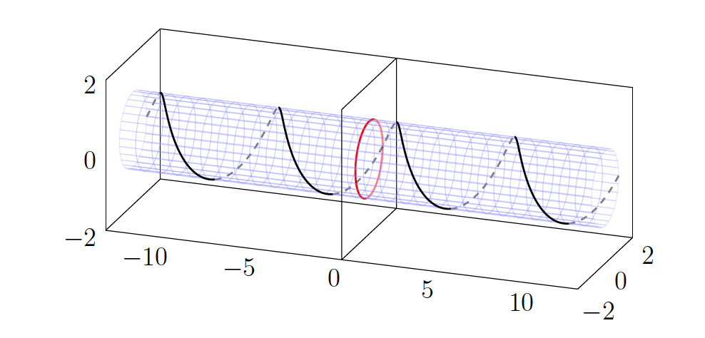
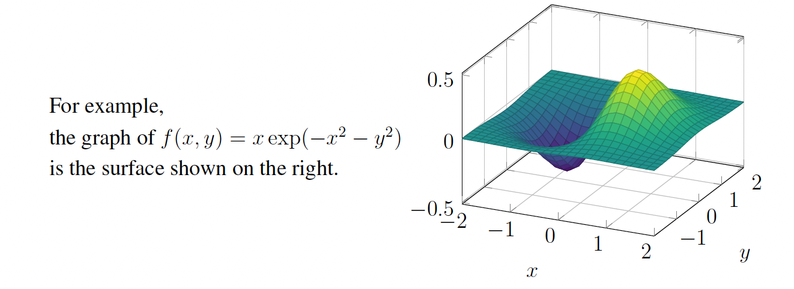
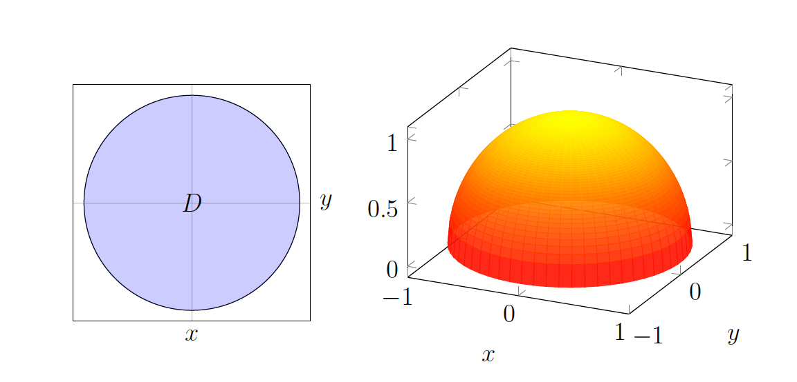
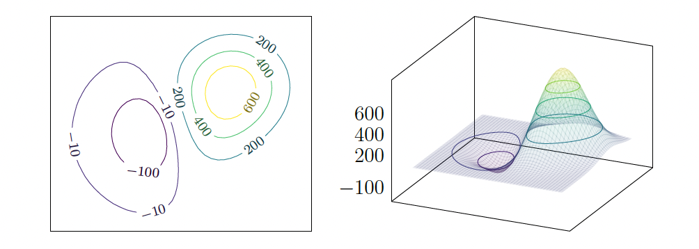
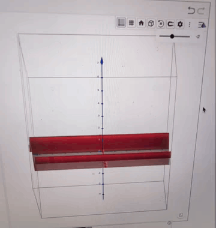
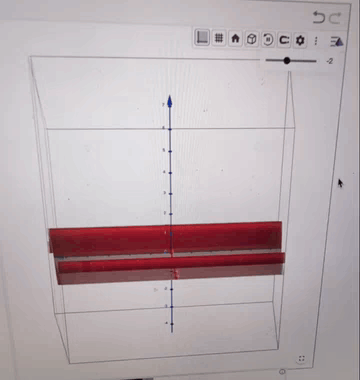

Multivariable functions, level sets, and contour plots
Basic terminology
Functions of more than one variable are called multivariable functions.
In particular a function from \(\mathbb{R}^n\) to \(\mathbb{R}^m\), typically denoted as
takes vectors in \(\mathbb{R}^n\) as input and gives vectors in \(\mathbb{R}^m\) as output. Keep in mind that a function assigns to each input a single output, but it is fine if two inputs yield the same output (e.g., \(f(\mathbf{x}) = \|\mathbf{x}\| = f(-\mathbf{x})\)).
A scalar-valued function is a function \(\mathbb{R}^n \rightarrow \mathbb{R}\) (that is to say, with \(m = 1\)). In other words, a scalar-valued function gives real number outputs.
Example: The problem of finding a best-fit line involves minimizing a scalar-valued function \(E : \mathbb{R}^2 \rightarrow \mathbb{R}\) of the vector \((m, b) \in \mathbb{R}^2\) (or more concretely, \(E\) is an \(\mathbb{R}\)-valued function of two variables \(m\) and \(b\)). We choose \((m, b)\) to minimize the sum of the squares of the errors; i.e., choose \((m, b)\) to minimize the scalar-valued function
Example: Addition and multiplication are scalar-valued functions \(\mathbb{R}^2 \rightarrow \mathbb{R}\):
Definition: A vector-valued function is a function \(f : \mathbb{R}^n \rightarrow \mathbb{R}^m\) with general \(m \geq 1\). In other words, a vector-valued function gives output considered as vectors in some \(\mathbb{R}^m\).
A vector-valued function \(f : \mathbb{R}^n \rightarrow \mathbb{R}^m\) can be expressed in terms of \(m\) scalar-valued component functions or coordinate functions \(f_1, \ldots, f_m : \mathbb{R}^n \rightarrow \mathbb{R}\), defined by the expressions
(depending on whether we consider the output to be a "vector" or a "point"), with each \(f_j\) a scalar-valued function.
We can write the output of \(f\) on the input \(\mathbf{x} \in \mathbb{R}^n\) in (at least) three ways:
depending on whether we want to keep things compact, emphasize that the input to \(f\) is considered as a vector in \(\mathbb{R}^n\), or emphasize that the output of \(f\) depends on \(n\) real-number inputs (the coordinates of the point or vector \(\mathbf{x}\)).
Example: Consider a small object flying through the air. At any given time \(t\), its position in space is a point \(\mathbf{x}(t) = (x(t), y(t), z(t)) \in \mathbb{R}^3\) and its velocity (a vector pointing in the direction of motion with magnitude equal to the speed) is some
so both position and velocity are \(\mathbb{R}^3\)-valued functions of time \(t \in \mathbb{R}\). In other words, we have vector-valued functions
Example: Vector-valued functions can encode ways to manipulate vectors geometrically. For example, the function \(T : \mathbb{R}^2 \rightarrow \mathbb{R}^2\) given by
is a rotation.
Composition
For functions \(f : \mathbb{R} \rightarrow \mathbb{R}\) and \(g : \mathbb{R} \rightarrow \mathbb{R}\), the composition \(f \circ g : \mathbb{R} \rightarrow \mathbb{R}\) is defined by \((f \circ g)(x) = f(g(x))\). As an illustration, the function \(h(x) = \sin(x^2)\) is the composition \(f \circ g\) for \(g(x) = x^2\) and \(f(u) = \sin(u)\).
Just as with functions \(\mathbb{R} \rightarrow \mathbb{R}\), we can form the composition of vector-valued functions.
Definition. If \(g : \mathbb{R}^n \rightarrow \mathbb{R}^p\) and \(f : \mathbb{R}^p \rightarrow \mathbb{R}^m\) are multivariable functions (note that \(g\) has output belonging to \(\mathbb{R}^p\) on which \(f\) is applied), we can form a new composite function: take an input in \(\mathbb{R}^n\); first apply \(g\) to it, and then apply \(f\):
As a shorthand, we write this new function as \(f \circ g\); the symbol \(\circ\) is read as "composed with." In symbols, the new function is given by
Example: Consider the functions \(f : \mathbb{R}^2 \rightarrow \mathbb{R}^2\) and \(g : \mathbb{R}^2 \rightarrow \mathbb{R}^2\) defined by
So \(f_1(u, v) = uv\), \(f_2(u, v) = u + v\), \(g_1(x, y) = e^{xy}\), \(g_2(x, y) = x - y\). Then \(f \circ g : \mathbb{R}^2 \rightarrow \mathbb{R}^2\) evaluated at \((x, y) \in \mathbb{R}^2\) equals
In this example, the composite function \(g \circ f : \mathbb{R}^2 \rightarrow \mathbb{R}^2\) also makes sense. Its value on input \((u, v) \in \mathbb{R}^2\) is
Observe that in this case, \(f \circ g\) and \(g \circ f\) are very different functions (just look at the formulas we have computed for each). The order of composition matters (familiar for scalar functions: \(\sin(x^2) \neq \sin(x)^2\) as functions).
Example: For the functions \(g : \mathbb{R} \rightarrow \mathbb{R}^3\) and \(f : \mathbb{R}^3 \rightarrow \mathbb{R}^2\) defined by
\(g\) can be visualized as the path of a particle moving on a helix on the cylinder \(y^2 + z^2 = 1\) of radius 1 around the \(x\)-axis, and \(f\) is the projection onto the \(yz\)-plane. Then \(f \circ g : \mathbb{R} \rightarrow \mathbb{R}^2\) is given by
the path of the particle's "shadow" in the \(yz\)-plane moving counterclockwise around a circle of radius 1 in the \(yz\)-plane.

Graphs, level sets, and contour plots
In our experience with functions \(f(x)\) of one variable, it can be quite helpful to visualize the function graphically.
Much as the graph of a 1-variable function \(f(x)\) is the subset of \(\mathbb{R}^2\) defined as
for an \(n\)-variable function \(f : \mathbb{R}^n \rightarrow \mathbb{R}\) its graph is a subset of \(\mathbb{R}^{n+1}\) defined as follows:
Definition: The graph of \(f : \mathbb{R}^n \rightarrow \mathbb{R}\) is the subset of \(\mathbb{R}^{n+1}\) (not \(\mathbb{R}^n\)!) defined as

Example: Let's work out the graph of the function \(f(x, y) = \sqrt{1 - x^2 - y^2}\).
We can only take the square root of a nonnegative number, so we require \(1 - x^2 - y^2 \geq 0\), or equivalently \(x^2 + y^2 \leq 1\).
This is the disk \(D\) centered at the origin in \(\mathbb{R}^2\) with radius 1. The graph of \(f\) is therefore
Notice that since \(z = \sqrt{1 - x^2 - y^2}\), we then have \(x^2 + y^2 + z^2 = 1\) with \(z \geq 0\). This graph is the upper hemisphere of the sphere in \(\mathbb{R}^3\) with radius 1 centered at \((0, 0, 0)\).

If you are hiking in a park and you get a “contour map” (or “contour plot”) of the terrain you are about to hike in, it may look something like below.

The curves on the left in the figure above indicate where the terrain is at a fixed level. For example, the curve that is labeled by 400 represents where the terrain has an altitude of 400 feet. The mathematical way to think about this is to consider the altitude function,
The set of points \((x, y)\) where \(A(x, y) = 400\) is the curve on the contour map labeled 400. The set of points \((x, y)\) where \(A(x, y) = 600\) is the curve on the contour map labeled 600. In general, the set of points \((x, y)\) where \(A(x, y) = c\) is called the level curve of the function \(A\) at level \(c\) (and is also called a level set, or sometimes even a contour line even though it generally looks nothing at all like a line).
The contour map consisting of a collection of level curves is very helpful in visualizing the altitude function \(z = A(x, y)\), and gives us a good understanding of the terrain. Of course, the contour map doesn't show the level curves \(A(x, y) = c\) for every \(c\); that would be impossible. Rather, the contour map shows these level curves for "enough" values of \(c\) that one can get a sense of the hilliness of the terrain for practical purposes. Between level curves drawn for values \(c_1 < c_2\) are level curves for intermediate values of \(c\) that are omitted for clarity.
Definition: Let \(f : \mathbb{R}^n \rightarrow \mathbb{R}\) be a function. For any \(c \in \mathbb{R}\), the level set of \(f\) at level \(c\) is the set of points \((x_1, \ldots, x_n) \in \mathbb{R}^n\) for which \(f(x_1, \ldots, x_n) = c\). It is also called the \(c\)-level set of \(f\).
If \(f\) is a function \(\mathbb{R}^2 \rightarrow \mathbb{R}\) of 2 variables then a contour plot of \(f\) is a picture in \(\mathbb{R}^2\) that depicts the level sets of \(f\) for many different values of \(c\) (often values with some common difference for "consecutive" level sets, such as a common difference of 10, or 4, or 1, or 0.2, etc).
Note: The website Desmos plots level curves \(g(x, y) = c\) for varying \(c\). To explore surface graphs, try CalcPlot3D or GeoGebra.
For example, here are surface graphs drawn using GeoGebra of the functions \(f(x, y) = 2xy\) and \(f(x, y) = sin(x)\)
 

Exercises
1(a). Consider the set \(S = \{(x, y, z) \in \mathbb{R}^3 : x^3 + z^3 + 3y^2z^3 + 5xy = 0\}\).
Give functions \(f, h : \mathbb{R}^3 \rightarrow \mathbb{R}\) for which \(S\) is a level set of both \(f(x, y, z)\) and \(h(x, y, z)\).
Solution: One straightforward choice is to define \(f\) directly from the equation defining \(S\):
Then \(S\) is the \(0\)-level set of \(f\), since \(S = \{(x, y, z) \in \mathbb{R}^3 : f(x, y, z) = 0\}\).
For \(h\), we can choose any function that has the same zero set. For example:
Then \(h(x, y, z) = 0\) if and only if \(f(x, y, z) = 0\), so \(S\) is also the \(0\)-level set of \(h\).
Alternatively, we could choose \(h(x, y, z) = (x^3 + z^3 + 3y^2z^3 + 5xy)^2\), which also has \(S\) as its \(0\)-level set, since a square equals zero if and only if the base equals zero.
1(b). By solving for \(z\) in terms of \(x\) and \(y\), give a function \(g : \mathbb{R}^2 \rightarrow \mathbb{R}\) for which \(S\) is the graph of \(g\).
Solution: Starting from the equation \(x^3 + z^3 + 3y^2z^3 + 5xy = 0\), we can factor out \(z^3\):
Since \(1 + 3y^2 \geq 1 > 0\) for all \(y \in \mathbb{R}\), we can solve for \(z^3\):
Therefore, we can define the function \(g : \mathbb{R}^2 \rightarrow \mathbb{R}\) by:
Then \(S\) is the graph of \(g\), since \(S = \{(x, y, z) \in \mathbb{R}^3 : z = g(x, y)\}\).
2. Consider the function \(g : \mathbb{R} \rightarrow \mathbb{R}^2\) defined by \(g(t) = \left(\frac{e^t + e^{-t}}{2}, \frac{e^t - e^{-t}}{2}\right)\).
Every point in the output of \(g\) lies on the hyperbola \(x^2 - y^2 = 1\). Are all points in the hyperbola \(\{(x, y) \in \mathbb{R}^2 : x^2 - y^2 = 1\}\) in the output of \(g\)? If "yes" then explain why, and if "no" then explain why a specific point on the hyperbola is not in the output.
Solution: The answer is no.
First, let's verify that every point in the output of \(g\) lies on the hyperbola. For \(g(t) = \left(\frac{e^t + e^{-t}}{2}, \frac{e^t - e^{-t}}{2}\right)\), we have:
Expanding the squares,
So indeed, every point in the output of \(g\) satisfies \(x^2 - y^2 = 1\).
However, not all points on the hyperbola are in the output of \(g\).
A point that is not in the output is \((-\sqrt{2}, -1)\) on the hyperbola. We have \((-\sqrt{2})^2 - (-1)^2 = 1\), so it's on the hyperbola. But since \(\frac{e^t + e^{-t}}{2} \geq 1\) for all \(t\), we cannot have the first coordinate equal to \(-\sqrt{2} < 0\). Therefore, \((-\sqrt{2}, -1)\) is not in the output of \(g\).
3(a). Let \(S\) be a level set \(\{(x, y, z) \in \mathbb{R}^3 : f(x, y, z) = c\}\) in \(\mathbb{R}^3\). If \(S\) is also the graph \(\{(x, y, z) \in \mathbb{R}^3 : (x, y) \in D, z = g(x, y)\}\) of a function \(g : D \rightarrow \mathbb{R}\) on some region \(D\) in \(\mathbb{R}^2\), explain why \(S\) meets each vertical line \(\{(a, b, t) : t \in \mathbb{R}\}\) (for \((a, b) \in \mathbb{R}^2\)) in at most one point. A vertical line in \(\mathbb{R}^3\) is a line parallel to the \(z\)-axis. For a fixed point \((a, b) \in \mathbb{R}^2\), the vertical line through \((a, b)\) is the set \(\{(a, b, t) : t \in \mathbb{R}\}\)— all points with the same \(x\) and \(y\) coordinates \((a, b)\), but with \(z\) (denoted here as \(t\)) varying over all real numbers.
Solution: Since \(S\) is the graph of the function \(g : D \rightarrow \mathbb{R}\), we have \(S = \{(x, y, z) \in \mathbb{R}^3 : (x, y) \in D, z = g(x, y)\}\).
Consider a vertical line \(\{(a, b, t) : t \in \mathbb{R}\}\) for some fixed \((a, b) \in \mathbb{R}^2\).
If \((a, b) \notin D\), then no point on this vertical line is in \(S\) (since \(S\) only contains points whose first two coordinates \((x, y)\) are in \(D\)). So the intersection is empty (zero points).
If \((a, b) \in D\), then by the definition of \(S\) as a graph, there is exactly one point in \(S\) with first two coordinates \((a, b)\), namely the point \((a, b, g(a, b))\). This point lies on the vertical line \(\{(a, b, t) : t \in \mathbb{R}\}\) (specifically when \(t = g(a, b)\)).
Since \(g\) is a function, it assigns exactly one value \(g(a, b)\) to each input \((a, b) \in D\). Therefore, there cannot be two different points in \(S\) with the same first two coordinates \((a, b)\), which means the vertical line can intersect \(S\) in at most one point.
3(b). For the sphere \(S = \{(x, y, z) \in \mathbb{R}^3 : x^2 + y^2 + z^2 = 4\}\) of radius 2 centered at the origin, explain both algebraically and geometrically why \(S\) violates the "vertical line test" in (a), so \(S\) is not the graph of a function.
Solution: For a point \((a, b, z)\) on a vertical line to also be on the sphere \(S\), we need:
Solving for \(z\):
There are two solutions:
This means the vertical line intersects the sphere in two distinct points: \((a, b, \sqrt{4 - a^2 - b^2})\) and \((a, b, -\sqrt{4 - a^2 - b^2})\).
Since the vertical line intersects \(S\) in more than one point, the sphere violates the "vertical line test" from part (a). Therefore, \(S\) cannot be the graph of a function \(g(x, y)\).
The sphere \(x^2 + y^2 + z^2 = 4\) is a closed surface centered at the origin. Consider any vertical line (parallel to the \(z\)-axis) that passes through a point \((a, b)\) inside the sphere where \(a^2 + b^2 < 4\).
Geometrically, this vertical line will pierce through the sphere, intersecting it at two points. Specifically, the line intersects the sphere at the point on the "lower" hemisphere (where \(z < 0\)). And the line intersects the sphere at the point on the "upper" hemisphere (where \(z > 0\)). This violates the requirement that a graph of a function must intersect each vertical line in at most one point.
Note: Contrast with the upper hemisphere: Now consider the upper hemisphere \(S_{\text{upper}} = \{(x, y, z) \in \mathbb{R}^3 : x^2 + y^2 + z^2 = 4, z \geq 0\}\).
For a vertical line through a point \((a, b)\) where \(a^2 + b^2 < 4\), the equation \(a^2 + b^2 + z^2 = 4\) still gives two solutions: \(z = \sqrt{4 - a^2 - b^2}\) and \(z = -\sqrt{4 - a^2 - b^2}\). However, since \(S_{\text{upper}}\) only includes points with \(z \geq 0\), only the positive solution \(z = \sqrt{4 - a^2 - b^2}\) is in \(S_{\text{upper}}\).
Therefore, each vertical line through a point \((a, b)\) with \(a^2 + b^2 < 4\) intersects \(S_{\text{upper}}\) in exactly one point: \((a, b, \sqrt{4 - a^2 - b^2})\). This satisfies the "vertical line test" from part (a).
Indeed, the upper hemisphere \(S_{\text{upper}}\) is the graph of the function \(g : D \rightarrow \mathbb{R}\) defined by \(g(x, y) = \sqrt{4 - x^2 - y^2}\), where \(D = \{(x, y) \in \mathbb{R}^2 : x^2 + y^2 \leq 4\}\). For a vertical line through a point \((a, b)\) where \(a^2 + b^2 > 4\), the equation \(a^2 + b^2 + z^2 = 4\) would require \(z^2 = 4 - a^2 - b^2 < 0\), which has no real solutions. Therefore, such a vertical line does not intersect \(S_{\text{upper}}\) at all (zero points), which also satisfies the "at most one point" requirement.
4. Consider the function \(g(v, w) = v^2 - w^2\). For \(c > 0\), check that \(g(v/\sqrt{c}, w/\sqrt{c}) = 1\) precisely when \(g(v, w) = c\). Explain why the level set \(g(v, w) = c\) is the same as scaling up the level set \(g(v, w) = 1\) by the factor \(\sqrt{c}\).
Solution: First, we verify that \(g(v/\sqrt{c}, w/\sqrt{c}) = 1\) precisely when \(g(v, w) = c\):
Therefore, \(g(v/\sqrt{c}, w/\sqrt{c}) = 1\) if and only if \(\frac{g(v, w)}{c} = 1\), which is equivalent to \(g(v, w) = c\).
Now, suppose \((v, w)\) is a point on the level set \(g(v, w) = c\). Then by the above, we have \(g(v/\sqrt{c}, w/\sqrt{c}) = 1\), which means \((v/\sqrt{c}, w/\sqrt{c})\) is a point on the level set \(g(v, w) = 1\).
Conversely, if \((p, q)\) is a point on the level set \(g(p, q) = 1\), then \(g(\sqrt{c} \cdot p, \sqrt{c} \cdot q) = c\), which means \((\sqrt{c} \cdot p, \sqrt{c} \cdot q)\) is a point on the level set \(g(v, w) = c\).
The transformation \((p, q) \mapsto (\sqrt{c} \cdot p, \sqrt{c} \cdot q)\) is precisely scaling by the factor \(\sqrt{c}\) in both coordinates. Therefore, the level set \(g(v, w) = c\) is obtained by scaling the level set \(g(v, w) = 1\) by the factor \(\sqrt{c}\).
5. Prove that the graph of \(f(x, y) = x^2 - y\) is the 2-level set of some function \(F(x, y, z)\).
Solution: The graph of \(f(x, y) = x^2 - y\) is the set:
Define the function \(F : \mathbb{R}^3 \rightarrow \mathbb{R}\) by:
Then \(F(x, y, z) = 2\) if and only if:
Therefore, the 2-level set of \(F\) is:
Note: In general, the graph of any function \(f : \mathbb{R}^n \rightarrow \mathbb{R}\) can be expressed as a level set. For the graph \(\{(x_1, \ldots, x_n, z) : z = f(x_1, \ldots, x_n)\}\), we can define \(F(x_1, \ldots, x_n, z) = z - f(x_1, \ldots, x_n) + c\) for any constant \(c\), and the graph will be the \(c\)-level set of \(F : \mathbb{R}^{n+1} \rightarrow \mathbb{R}\).